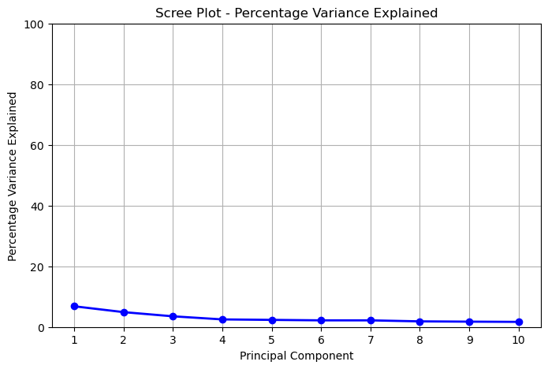
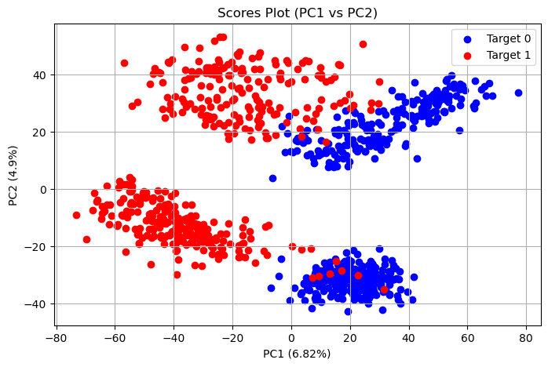
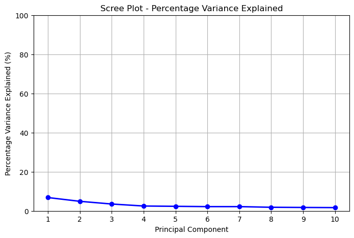
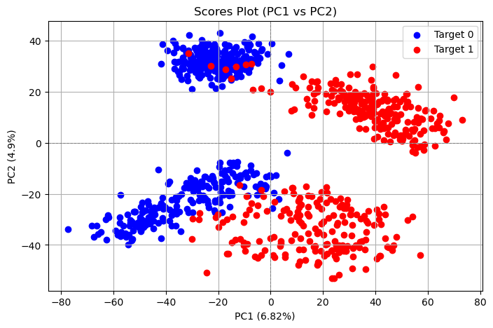

import os, numpy as np, pandas as pd
import matplotlib.pyplot as plt
from sklearn.decomposition import PCA
from sklearn.preprocessing import StandardScaler2 Principal Component Analysis
2.0.1 Import packages
2.0.2 My PCA code
class PCAAnalysis:
def __init__(self, data):
self.data = data
self.mean_centered_data = None
self.cov_matrix = None
self.eigenvalues = None
self.eigenvectors = None
self.scores = None
self.variance = None
self.percent_variance = None
def mean_centering(self):
self.mean_centered_data = self.data - np.mean(self.data, axis=0)
def compute_covariance_matrix(self):
self.cov_matrix = np.cov(self.mean_centered_data, rowvar=False)
def perform_eigen_decomposition(self):
self.eigenvalues, self.eigenvectors = np.linalg.eig(self.cov_matrix)
# prevent complex numbers
self.eigenvalues = np.real(self.eigenvalues)
self.eigenvectors = np.real(self.eigenvectors)
# Sort eigenvalues and eigenvectors in descending order
sorted_indices = np.argsort(self.eigenvalues)[::-1]
self.eigenvalues = self.eigenvalues[sorted_indices]
self.eigenvectors = self.eigenvectors[:, sorted_indices]
def project_data(self):
self.scores = np.dot(self.mean_centered_data, self.eigenvectors)
def compute_variance(self):
total_variance = np.sum(self.eigenvalues)
self.variance = self.eigenvalues
self.percent_variance = (self.eigenvalues / total_variance) * 100
def perform_pca(self):
self.mean_centering()
self.compute_covariance_matrix()
self.perform_eigen_decomposition()
self.project_data()
self.compute_variance()
def results(self):
return {
"Variance": self.variance,
"Percent Variance Explained": self.percent_variance,
"Scores": self.scores,
"Loadings": self.eigenvectors,
}
def diplay_result(self):
print("Eigenvalues (Variance):")
print(self.variance)
print("\nPercent Variance Explained:")
print(self.percent_variance)
print("\nPrincipal Components (Eigenvectors):")
print(self.eigenvectors)
print("\nScores (Projected Data):")
print(self.scores)
def scree_plot(self, save_path=None):
num_components = len(self.percent_variance)
# Plot only the first 10 principal components if there are more than 10
if num_components > 10:
components_to_plot = self.percent_variance[:10]
x_ticks = range(1, 11)
else:
components_to_plot = self.percent_variance
x_ticks = range(1, num_components + 1)
# Plotting the scree plot for percentage variance explained
plt.figure(figsize=(8, 5))
plt.plot(x_ticks, components_to_plot, 'o-', linewidth=2, color='blue')
plt.title('Scree Plot - Percentage Variance Explained')
plt.xlabel('Principal Component')
plt.ylabel('Percentage Variance Explained')
plt.ylim(0, 100)
plt.xticks(x_ticks)
plt.grid(True)
if save_path:
plt.savefig(save_path, format='png', dpi=300, bbox_inches='tight')
plt.show()
def scores_plot(self, group_by_target=False, target_data=False, save_path=None):
plt.figure(figsize=(8, 5))
if group_by_target:
pca_df = pd.DataFrame(data=self.scores[:,0:2], columns=['PC1', 'PC2'])
pca_df['Target'] = target_data['sample_label']
colors = {0: 'blue', 1: 'red'}
for target_value, group in pca_df.groupby('Target'):
plt.scatter(group['PC1'], group['PC2'], color=colors[target_value],
label=f'Target {target_value}')
else:
plt.scatter(self.scores[:, 0], self.scores[:, 1], alpha=0.7, edgecolor='k')
plt.title('Scores Plot (PC1 vs PC2)')
plt.xlabel('PC1 ({}%)'.format(round(self.percent_variance[0],2)))
plt.ylabel('PC2 ({}%)'.format(round(self.percent_variance[1],2)))
plt.legend()
plt.grid(True)
if save_path:
plt.savefig(save_path, format='png', dpi=300, bbox_inches='tight')
plt.show()
def loadings_plot(self, save_path=None):
loadings = self.eigenvectors[:, :2] # Loadings for PC1 and PC2
plt.figure(figsize=(8, 5))
plt.axhline(0, color='gray', linestyle='--', linewidth=0.5)
plt.axvline(0, color='gray', linestyle='--', linewidth=0.5)
for i, (x, y) in enumerate(zip(loadings[:, 0], loadings[:, 1])):
plt.arrow(0, 0, x, y, color='blue', alpha=0.8, head_width=0.05, length_includes_head=True)
plt.text(x*1.15, y*1.04, self.data.columns[i], color='black', fontsize=10)
plt.title('Loadings Plot (PC1 vs PC2)')
plt.xlabel('PC1 Loadings')
plt.ylabel('PC2 Loadings')
plt.grid(color='gray', linestyle='--', linewidth=0.5)
plt.axis('equal')
if save_path:
plt.savefig(save_path, format='png', dpi=300, bbox_inches='tight')
plt.show()2.0.3 Load the independent variables
df_x = pd.read_csv("C:/Users/nnamd/Documents/data/machine_learning/sandbox_3/sample_data_for_project_final.csv")
df_x| Unnamed: 0 | sample_1 | sample_2 | sample_3 | sample_4 | sample_5 | sample_6 | sample_7 | sample_8 | sample_9 | ... | sample_855 | sample_856 | sample_857 | sample_858 | sample_859 | sample_860 | sample_861 | sample_862 | sample_863 | sample_864 | |
|---|---|---|---|---|---|---|---|---|---|---|---|---|---|---|---|---|---|---|---|---|---|
| 0 | variable_1 | 1.335571e+05 | 4.067772e+05 | 4.653638e+05 | 2.327503e+05 | 3.204984e+05 | 9.507953e+04 | 2.629849e+05 | 1.677002e+05 | 1.651118e+05 | ... | 3.331851e+05 | 4.848780e+05 | 2.804682e+05 | 5.179674e+05 | 4.358776e+05 | 3.139291e+05 | 3.904108e+05 | 3.532888e+05 | 5.979247e+05 | 4.931237e+05 |
| 1 | variable_2 | 2.914323e+08 | 2.058200e+08 | 1.572093e+08 | 1.889364e+08 | 2.151381e+08 | 1.980727e+08 | 2.349494e+08 | 1.437654e+08 | 3.101801e+08 | ... | 9.908329e+07 | 1.128658e+08 | 1.349937e+08 | 1.058415e+08 | 9.786954e+07 | 7.953481e+07 | 9.254447e+07 | 1.378881e+08 | 1.291880e+08 | 1.421230e+08 |
| 2 | variable_3 | 1.039778e+08 | 6.959067e+07 | 6.546160e+07 | 7.890295e+07 | 1.099364e+08 | 9.149507e+07 | 1.177567e+08 | 7.226901e+07 | 1.280126e+08 | ... | 5.433479e+07 | 4.719515e+07 | 5.444209e+07 | 4.031031e+07 | 5.985512e+07 | 2.243647e+07 | 6.748665e+07 | 5.571944e+07 | 8.007063e+07 | 7.203118e+07 |
| 3 | variable_4 | 1.899937e+07 | 2.725515e+07 | 5.049965e+07 | 3.885274e+07 | 3.245649e+07 | 2.520913e+07 | 3.618445e+07 | 4.143107e+07 | 2.248020e+07 | ... | 3.839418e+07 | 3.597201e+07 | 1.600624e+07 | 1.891379e+07 | 2.643795e+07 | 2.854334e+07 | 2.003175e+07 | 1.983767e+07 | 1.582618e+07 | 2.097925e+07 |
| 4 | variable_5 | 1.075189e+04 | 1.365641e+02 | 5.717232e+03 | 1.365641e+02 | 1.365641e+02 | 1.365641e+02 | 1.365641e+02 | 3.150963e+03 | 1.365641e+02 | ... | 1.365641e+02 | 1.365641e+02 | 1.365641e+02 | 1.365641e+02 | 1.365641e+02 | 1.365641e+02 | 1.365641e+02 | 1.365641e+02 | 1.365641e+02 | 1.365641e+02 |
| ... | ... | ... | ... | ... | ... | ... | ... | ... | ... | ... | ... | ... | ... | ... | ... | ... | ... | ... | ... | ... | ... |
| 15601 | variable_15602 | 1.365641e+02 | 1.365641e+02 | 1.365641e+02 | 1.365641e+02 | 1.365641e+02 | 4.849214e+03 | 2.647425e+03 | 1.365641e+02 | 5.857132e+03 | ... | 1.365641e+02 | 1.382506e+03 | 1.365641e+02 | 8.669330e+03 | 3.338606e+03 | 1.826847e+03 | 9.233444e+03 | 6.235643e+03 | 1.074344e+04 | 9.022216e+03 |
| 15602 | variable_15603 | 1.484041e+04 | 1.365641e+02 | 8.670437e+03 | 1.365641e+02 | 9.700260e+03 | 2.808402e+03 | 9.422814e+03 | 1.365641e+02 | 3.608028e+03 | ... | 1.365641e+02 | 6.552061e+03 | 7.869005e+03 | 6.919266e+03 | 3.443958e+03 | 5.542762e+03 | 1.365641e+02 | 7.214279e+03 | 9.303027e+03 | 8.189856e+03 |
| 15603 | variable_15604 | 3.509693e+03 | 6.338602e+03 | 9.574115e+03 | 1.731127e+03 | 9.168757e+03 | 1.365641e+02 | 3.158676e+03 | 7.219811e+03 | 7.749311e+03 | ... | 1.365641e+02 | 1.365641e+02 | 1.365641e+02 | 1.365641e+02 | 1.365641e+02 | 1.365641e+02 | 1.365641e+02 | 1.365641e+02 | 1.365641e+02 | 1.365641e+02 |
| 15604 | variable_15605 | 1.365641e+02 | 2.799276e+03 | 6.296987e+03 | 1.365641e+02 | 4.886416e+03 | 1.365641e+02 | 6.012350e+03 | 6.212321e+03 | 5.120082e+03 | ... | 6.193849e+03 | 1.365641e+02 | 5.575186e+03 | 4.901934e+03 | 5.794283e+03 | 7.640553e+03 | 4.356595e+03 | 1.365641e+02 | 9.194651e+03 | 5.405931e+03 |
| 15605 | variable_15606 | 1.365641e+02 | 1.365641e+02 | 1.365641e+02 | 1.365641e+02 | 1.365641e+02 | 1.365641e+02 | 1.365641e+02 | 1.365641e+02 | 1.365641e+02 | ... | 8.420486e+03 | 5.389534e+03 | 7.218614e+03 | 1.365641e+02 | 3.187292e+03 | 5.848782e+03 | 1.157885e+04 | 3.406270e+03 | 1.365641e+02 | 7.939925e+03 |
15606 rows × 864 columns
2.0.4 Transpose the dataFrame
transposed_data = df_x.T
transposed_data.columns = transposed_data.iloc[0]
transposed_data = transposed_data[1:]
transposed_data = transposed_data.astype(float)
transposed_data| Unnamed: 0 | variable_1 | variable_2 | variable_3 | variable_4 | variable_5 | variable_6 | variable_7 | variable_8 | variable_9 | variable_10 | ... | variable_15597 | variable_15598 | variable_15599 | variable_15600 | variable_15601 | variable_15602 | variable_15603 | variable_15604 | variable_15605 | variable_15606 |
|---|---|---|---|---|---|---|---|---|---|---|---|---|---|---|---|---|---|---|---|---|---|
| sample_1 | 133557.109 | 291432288.0 | 103977776.0 | 18999370.0 | 10751.889000 | 81506488.0 | 1.365641e+02 | 35819420.0 | 136.564096 | 85997.516 | ... | 136.564096 | 5500.958000 | 136.564096 | 136.564096 | 136.564096 | 136.564096 | 14840.413000 | 3509.693000 | 136.564096 | 136.564096 |
| sample_2 | 406777.188 | 205820016.0 | 69590672.0 | 27255152.0 | 136.564096 | 73695920.0 | 1.365641e+02 | 33806928.0 | 136.564096 | 99303.719 | ... | 136.564096 | 136.564096 | 136.564096 | 136.564096 | 136.564096 | 136.564096 | 136.564096 | 6338.602000 | 2799.276000 | 136.564096 |
| sample_3 | 465363.813 | 157209296.0 | 65461600.0 | 50499648.0 | 5717.232000 | 39208156.0 | 1.365641e+02 | 48728544.0 | 136.564096 | 162395.547 | ... | 136.564096 | 136.564096 | 136.564096 | 136.564096 | 136.564096 | 136.564096 | 8670.437000 | 9574.115000 | 6296.987000 | 136.564096 |
| sample_4 | 232750.344 | 188936448.0 | 78902952.0 | 38852740.0 | 136.564096 | 48073508.0 | 1.365641e+02 | 34050052.0 | 136.564096 | 87778.508 | ... | 136.564096 | 14189.320000 | 136.564096 | 136.564096 | 136.564096 | 136.564096 | 136.564096 | 1731.127000 | 136.564096 | 136.564096 |
| sample_5 | 320498.406 | 215138112.0 | 109936376.0 | 32456494.0 | 136.564096 | 57907084.0 | 1.365641e+02 | 43285176.0 | 136.564096 | 119196.375 | ... | 136.564096 | 7917.235000 | 136.564096 | 136.564096 | 136.564096 | 136.564096 | 9700.260000 | 9168.757000 | 4886.416000 | 136.564096 |
| ... | ... | ... | ... | ... | ... | ... | ... | ... | ... | ... | ... | ... | ... | ... | ... | ... | ... | ... | ... | ... | ... |
| sample_860 | 313929.063 | 79534808.0 | 22436468.0 | 28543338.0 | 136.564096 | 57903016.0 | 3.734570e+07 | 40742204.0 | 136.564096 | 93482.063 | ... | 2349.178000 | 5626.164000 | 10775.031000 | 136.564096 | 2095.552000 | 1826.847000 | 5542.762000 | 136.564096 | 7640.553000 | 5848.782000 |
| sample_861 | 390410.813 | 92544472.0 | 67486648.0 | 20031750.0 | 136.564096 | 55365204.0 | 5.099802e+07 | 58647736.0 | 136.564096 | 157648.281 | ... | 136.564096 | 136.564096 | 136.564096 | 2965.998000 | 6135.898000 | 9233.444000 | 136.564096 | 136.564096 | 4356.595000 | 11578.846000 |
| sample_862 | 353288.781 | 137888112.0 | 55719440.0 | 19837670.0 | 136.564096 | 59020392.0 | 5.731548e+07 | 44283088.0 | 136.564096 | 115826.359 | ... | 2515.764000 | 12990.207000 | 4949.809000 | 6428.875000 | 7008.433000 | 6235.643000 | 7214.279000 | 136.564096 | 136.564096 | 3406.270000 |
| sample_863 | 597924.688 | 129187984.0 | 80070632.0 | 15826181.0 | 136.564096 | 68727808.0 | 5.631096e+07 | 47254052.0 | 136.564096 | 70187.469 | ... | 2603.684000 | 7746.302000 | 3995.213000 | 4718.577000 | 8226.846000 | 10743.437000 | 9303.027000 | 136.564096 | 9194.651000 | 136.564096 |
| sample_864 | 493123.719 | 142123024.0 | 72031176.0 | 20979250.0 | 136.564096 | 40610380.0 | 6.269296e+07 | 51462672.0 | 136.564096 | 248897.828 | ... | 136.564096 | 12626.373000 | 136.564096 | 136.564096 | 5338.026000 | 9022.216000 | 8189.856000 | 136.564096 | 5405.931000 | 7939.925000 |
863 rows × 15606 columns
2.0.5 Load the target variable
df_y = pd.read_csv("C:/Users/nnamd/Documents/data/machine_learning/sandbox_3/sample_metadata_for_project_final.csv")
df_y| sample_name | sample_label | |
|---|---|---|
| 0 | sample_1 | 0 |
| 1 | sample_2 | 1 |
| 2 | sample_3 | 0 |
| 3 | sample_4 | 1 |
| 4 | sample_5 | 0 |
| ... | ... | ... |
| 858 | sample_860 | 1 |
| 859 | sample_861 | 0 |
| 860 | sample_862 | 1 |
| 861 | sample_863 | 0 |
| 862 | sample_864 | 1 |
863 rows × 2 columns
2.0.6 Feature scaling (standardization)
transposed_data_scaled = StandardScaler().fit_transform(transposed_data)
transposed_data_scaledarray([[-0.94348301, 3.37913141, 1.69421238, ..., 0.41132448,
-1.00727398, -0.97147979],
[-0.11669789, 1.60487321, 0.40754899, ..., 1.3182179 ,
-0.28522942, -0.97147979],
[ 0.06058977, 0.59744791, 0.25305136, ..., 2.35546068,
0.66324088, -0.97147979],
...,
[-0.27855795, 0.19702905, -0.11147136, ..., -0.6700353 ,
-1.00727398, -0.0521259 ],
[ 0.46172925, 0.0167246 , 0.79967799, ..., -0.6700353 ,
1.44899712, -0.97147979],
[ 0.1445934 , 0.28479482, 0.4988654 , ..., -0.6700353 ,
0.42161424, 1.22261668]])2.0.7 Using my PCA code
pca2 = PCAAnalysis(transposed_data_scaled)
pca2.perform_pca()
pca2.diplay_result()Eigenvalues (Variance):
[ 1.06606786e+03 7.65144773e+02 5.49774198e+02 ... -6.21941378e-14
-6.38587421e-14 -1.07737875e-13]
Percent Variance Explained:
[ 6.82322542e+00 4.89720725e+00 3.51875655e+00 ... -3.98065298e-16
-4.08719376e-16 -6.89561925e-16]
Principal Components (Eigenvectors):
[[ 0.00654843 0.00717741 -0.00215395 ... 0.00037667 0.00018435
-0.02024689]
[ 0.00698362 -0.01287274 -0.0242181 ... -0.00482655 0.00073464
-0.00598793]
[ 0.00636806 -0.01518148 -0.01856863 ... 0.00087039 0.00172927
0.00228715]
...
[ 0.00014869 -0.01233943 -0.00248012 ... 0.00596605 0.00881624
0.01140568]
[ 0.00448358 0.0108511 -0.0054498 ... -0.00264049 -0.00652011
-0.01008767]
[ 0.00738502 0.01581409 0.00019945 ... 0.00394409 -0.00195743
-0.00234301]]
Scores (Projected Data):
[[ 1.19586936e+00 -3.46756417e+01 -2.25660913e+01 ... -7.27889971e-15
8.89045781e-15 -9.15153370e-15]
[-5.62198845e+01 -1.37074333e+01 -5.17698188e+00 ... 6.10622664e-15
-7.44890261e-15 -8.86096752e-15]
[ 9.82985419e+00 -2.87003853e+01 -9.13129836e+00 ... 4.87457297e-16
1.02973186e-14 -5.53723734e-15]
...
[-1.17328307e+01 3.13122100e+01 1.39677083e+01 ... 2.72004641e-15
2.22044605e-15 2.26901831e-15]
[ 4.53416852e+01 2.57901501e+01 1.93305144e+01 ... 2.19615992e-15
7.79931675e-15 -1.82666382e-15]
[ 1.66062582e+01 4.33861314e+01 3.99768953e+01 ... -1.82145965e-15
-6.92501612e-15 4.96824804e-15]]2.0.8 Using my PCA code: Scree plot
pca2.scree_plot()
2.0.9 Using my PCA code: Scores plot
pca2.scores_plot(group_by_target=True, target_data=df_y)
2.0.10 Sklearn PCA
# Applying PCA
pca = PCA()
pca_result = pca.fit_transform(transposed_data_scaled)
# Extracting PCA components, explained variance, and explained variance ratio
components = pca.components_
explained_variance = pca.explained_variance_
explained_variance_ratio = pca.explained_variance_ratio_
# Displaying results
components[0:20], explained_variance[0:20], explained_variance_ratio[0:20](array([[-0.00654843, -0.00698362, -0.00636806, ..., -0.00014869,
-0.00448358, -0.00738502],
[-0.00717741, 0.01287274, 0.01518148, ..., 0.01233943,
-0.0108511 , -0.01581409],
[-0.00215395, -0.0242181 , -0.01856863, ..., -0.00248012,
-0.0054498 , 0.00019945],
...,
[ 0.00482643, -0.0031872 , 0.00751572, ..., 0.00602303,
0.01190958, 0.00927212],
[ 0.01724092, -0.00814579, 0.00257728, ..., -0.00154193,
0.00047157, 0.00921824],
[ 0.00544743, -0.0055431 , -0.02378863, ..., -0.00099243,
0.00801784, 0.00164786]]),
array([1066.06786339, 765.14477332, 549.77419754, 390.74299144,
365.8793712 , 342.02570847, 341.65618198, 289.92102159,
274.96769549, 263.61187815, 233.47738021, 190.8811226 ,
184.44615598, 167.13978473, 162.717066 , 157.96569923,
133.67444707, 124.08038122, 115.05657412, 101.0595343 ]),
array([0.06823225, 0.04897207, 0.03518757, 0.02500898, 0.02341762,
0.0218909 , 0.02186725, 0.01855601, 0.01759894, 0.01687213,
0.01494341, 0.01221709, 0.01180523, 0.01069756, 0.01041449,
0.01011038, 0.00855566, 0.0079416 , 0.00736404, 0.00646818]))2.0.11 Sklearn PCA: Scree plot
def plot_scree(save_path=None):
num_components = len(explained_variance_ratio)
# Plot only the first 10 principal components if there are more than 10
if num_components > 10:
components_to_plot = explained_variance_ratio[:10]
x_ticks = range(1, 11)
else:
components_to_plot = explained_variance_ratio
x_ticks = range(1, num_components + 1)
plt.figure(figsize=(8, 5))
plt.plot(x_ticks, components_to_plot*100, 'o-', linewidth=2, color='blue')
plt.title('Scree Plot - Percentage Variance Explained')
plt.xlabel('Principal Component')
plt.ylabel('Percentage Variance Explained (%)')
plt.ylim(0, 100)
plt.xticks(x_ticks)
plt.grid(True)
if save_path:
plt.savefig(save_path, format='png', dpi=300, bbox_inches='tight')
plt.show()
plot_scree()
2.0.12 Sklearn PCA: extract the top 6 principal components and plot PC1 and PC2
# Convert PCA scores to a DataFrame
pca_df = pd.DataFrame(data=pca_result[:,0:6], columns=['PC1', 'PC2', 'PC3', 'PC4', 'PC5', 'PC6'])
pca_df['Target'] = df_y['sample_label']
def plot_scores(save_path=None):
plt.figure(figsize=(8, 5))
#plt.scatter(pca_result[:, 0], pca_result[:, 1], alpha=0.7, edgecolors='k')
colors = {0: 'blue', 1: 'red'}
for target_value, group in pca_df.groupby('Target'):
plt.scatter(group['PC1'], group['PC2'], color=colors[target_value],
label=f'Target {target_value}')
plt.title('Scores Plot (PC1 vs PC2)')
plt.xlabel('PC1 ({}%)'.format(round(explained_variance_ratio[0] * 100, 2)))
plt.ylabel('PC2 ({}%)'.format(round(explained_variance_ratio[1] * 100, 2)))
plt.axhline(0, color='gray', linestyle='--', linewidth=0.7)
plt.axvline(0, color='gray', linestyle='--', linewidth=0.7)
plt.legend()
plt.grid(True)
if save_path:
plt.savefig(save_path, format='png', dpi=300, bbox_inches='tight')
plt.show()
plot_scores()
2.0.13 Save the dataframe of PC1-PC6 for logistic regression
pca_df['samples'] = transposed_data.index
pca_df.to_csv('PCA_new_dimensions.csv', index=False)
pca_df| PC1 | PC2 | PC3 | PC4 | PC5 | PC6 | Target | samples | |
|---|---|---|---|---|---|---|---|---|
| 0 | -1.195869 | 34.675642 | -22.566091 | -10.124487 | 5.437070 | -27.289066 | 0 | sample_1 |
| 1 | 56.219885 | 13.707433 | -5.176982 | -17.500171 | 1.755895 | -25.040687 | 1 | sample_2 |
| 2 | -9.829854 | 28.700385 | -9.131298 | -8.827665 | -17.923073 | -37.253751 | 0 | sample_3 |
| 3 | 63.601822 | 7.700061 | -6.719630 | -26.422956 | -22.782805 | -22.051176 | 1 | sample_4 |
| 4 | -9.944483 | 32.471231 | -27.308476 | -18.768296 | -26.321906 | -25.460404 | 0 | sample_5 |
| ... | ... | ... | ... | ... | ... | ... | ... | ... |
| 858 | 27.400601 | -41.364723 | 26.597015 | -14.626021 | 14.450297 | -21.922266 | 1 | sample_860 |
| 859 | -50.426578 | -33.143071 | 26.495926 | -5.602025 | 14.432004 | -28.201209 | 0 | sample_861 |
| 860 | 11.732831 | -31.312210 | 13.967708 | -13.244061 | 22.363992 | -18.355105 | 1 | sample_862 |
| 861 | -45.341685 | -25.790150 | 19.330514 | -2.792202 | 24.088169 | -22.854234 | 0 | sample_863 |
| 862 | -16.606258 | -43.386131 | 39.976895 | -23.290725 | -2.533932 | -19.645929 | 1 | sample_864 |
863 rows × 8 columns